Install Clear Linux* OS as a VMware* Workstation Player guest OS
This page explains how to create a new VM and install Clear Linux OS on it with the VMware Workstation Player hypervisor.
Overview
VMware Workstation Player is a type 2 hypervisor. It runs on top of Windows* or Linux* operating systems. With VMware ESXi, you can create, configure, manage, and run Clear Linux* OS VMs on your local system.
VMware offers a type 1 hypervisor called VMware ESXi designed for the cloud environment. For information on how to install Clear Linux OS as guest OS on it, see Install Clear Linux* OS as a VMware* ESXi guest OS.
Note
The screenshots on this document show the Windows version of the VMware Workstation 15 Player. The menus and prompts are similar to those in other versions and for the Linux OS save some minor wording differences.
If you prefer to use a pre-configured Clear Linux OS VMware image instead, see our Run pre-configured Clear Linux* OS image as a VMware* Workstation Player guest OS guide.
Install the VMware Workstation Player hypervisor
Enable Intel® VT and Intel® VT-d in your system’s BIOS.
VMware Workstation Player is available for Windows and Linux. Download your preferred version.
Note
By default, selecting download means you receive the latest version of this application. Commands may differ based on the version.
Install VMware Workstation Player following the instructions appropriate for your system’s OS:
On supported Linux distros:
Enable a GUI desktop.
Start a terminal emulator.
Start the installer by issuing the command below and follow the guided steps.
sudo sh ./VMware-Player-[version number].x86_64.bundle
On Windows:
- Start the installer.
- Follow the setup wizard.
For additional help, see the VMware Workstation Player Documentation.
Download the latest Clear Linux OS installer
Get the latest installer with Clear Linux OS OS Desktop from the downloads page.
Visit Clear Linux* OS image types for additional information about all available Clear Linux OS images.
We also provide instructions for downloading and verifying a Clear Linux ISO. For more information, refer to Download, verify, and decompress a Clear Linux* OS image.
Create and configure a new VM
Start the VMware Workstation Player app.
On the home screen, click Create a New Virtual Machine. See Figure 1.
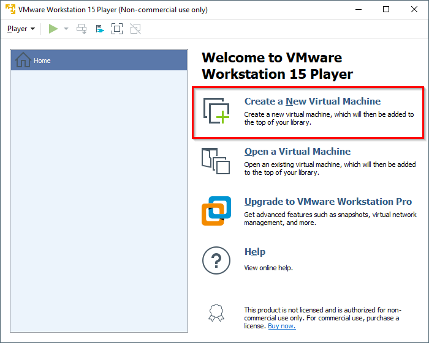Figure 1: VMware Workstation Player - Create a new virtual machine
On the Welcome to the New Virtual Machine Wizard screen, select the Installer disc image file (iso) option. See Figure 2.
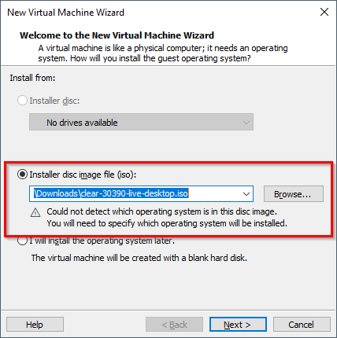Figure 2: VMware Workstation Player - Select Clear Linux OS installer ISO
Click the Browse button and select the decompressed Clear Linux OS installer ISO.
Click the Next button.
On the Select a Guest Operating System, set the Guest operating system setting to Linux. See Figure 3.
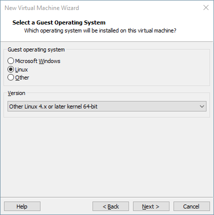Figure 3: VMware Workstation Player - Select guest operating system type
Set the Version setting to Other Linux 4.x or later kernel 64-bit.
Click the Next button.
On the Name the Virtual Machine screen, name the new VM. See Figure 4.
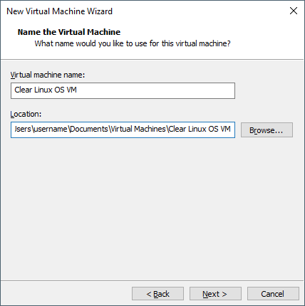Figure 4: VMware Workstation Player - Name virtual machine
Click the Next button.
On the Specify Disk Capacity screen, set the VM’s maximum disk size. See Figure 5.
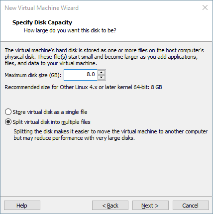Figure 5: VMware Workstation Player - Set disk capacity
Note
For optimal performance with the Clear Linux OS Desktop image, we recommend 32GB of drive space. See Recommended minimum system requirements for more details.
Click the Next button.
On the Ready to Create Virtual Machine screen, click the Customize Hardware… button. See Figure 6.
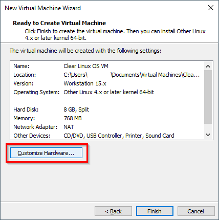Figure 6: VMware Workstation Player - Customize hardware
Select Memory and set the size to 2GB. See Figure 7.
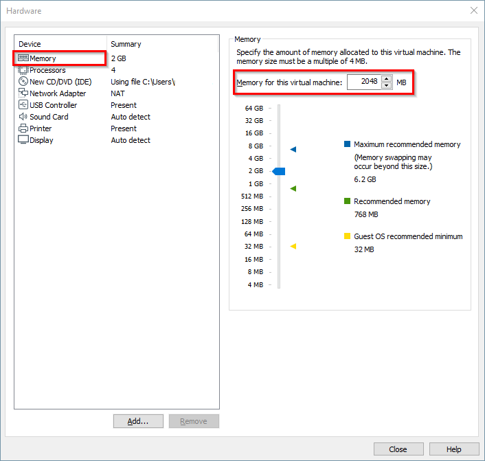Figure 7: VMware Workstation Player - Set memory size
Note
The Clear Linux OS installer ISO needs a minimum of 2GB of RAM. After completing installation, Clear Linux OS can run on as little as 128MB of RAM. Thus, you can reduce the memory size if needed. See Recommended minimum system requirements for more details.
Under the Device list, select Processors. See Figure 8.
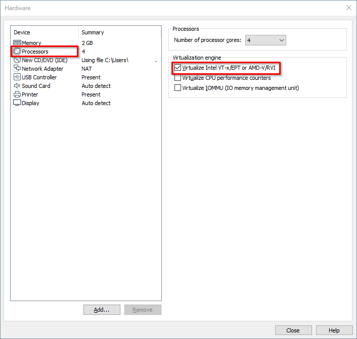Figure 8: VMware Workstation Player - Set virtualization engine option
Under the Virtualization engine section, check Virtualize Intel VT-x/EPT or AMD-V/RVI.
Click the Close button.
Click the Finish button.
{kind=link}
{kind=link}
{kind=link}
{kind=link}
{kind=link}
{kind=link}
{kind=link}
{kind=link}
Install Clear Linux OS into the new VM
Select the newly-created VM and click the Play virtual machine button. See Figure 9.
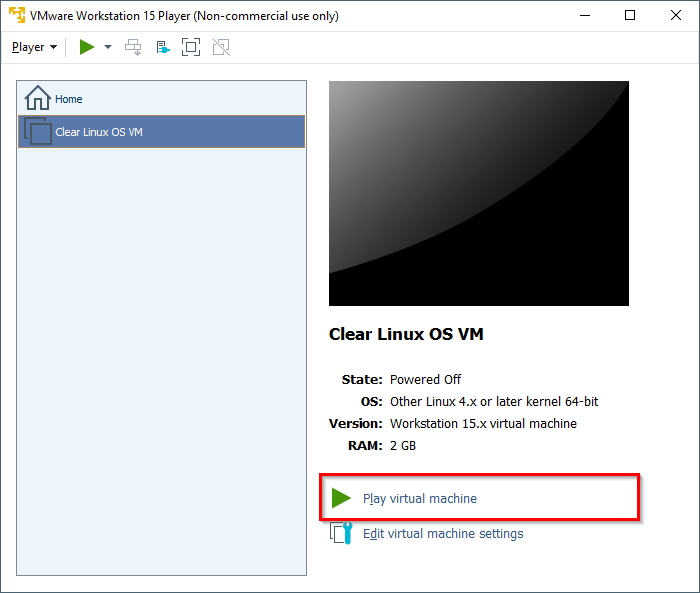Figure 9: VMware Workstation Player - Power on virtual machine
Follow the Install from live image guide to complete the installation of Clear Linux OS.
After the installation completes, reboot the VM. This reboot restarts the Clear Linux OS installer.
{kind=link}
Detach the Clear Linux OS installer ISO from the VM
To enable the mouse pointer so you access VMware Workstation Player’s menus, press <CTRL> + <ALT> on the keyboard.
To disconnect the CD/DVD to stop it from booting the Clear Linux OS installer ISO again, click the Player menu. See Figure 10.
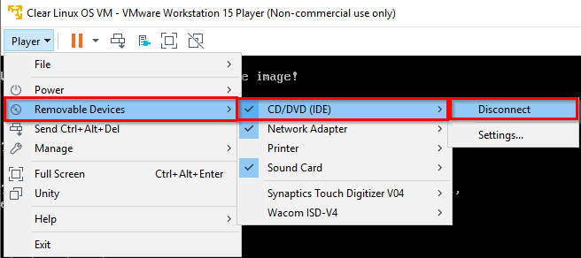Figure 10: VMware Workstation Player - Edit CD/DVD settings
Go to .
Click the OK button.
{kind=link}
Enable UEFI boot support
Clear Linux OS needs UEFI support to boot. To enable UEFI:
Power off the VM. click the Player menu. See Figure 11.
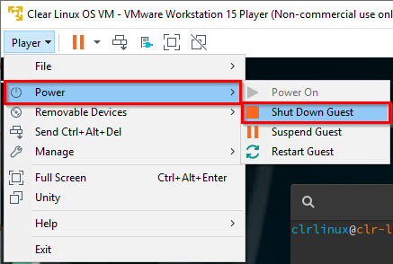Figure 11: VMware Workstation Player - Power off virtual machine
Go to Power and select Shut Down Guest.
Add the following line to the end of your VM’s
.vmxfile:firmware = "efi"Note
Depending on the OS, you can typically find the VMware VM files under:
- On Linux distros:
/home/username/vmware - On Windows:
C:\Users\username\Documents\Virtual Machines
- On Linux distros:
After configuring the settings above, power on your Clear Linux OS virtual machine. On the VMware Workstation Player home screen, select your VM. See Figure 9.
Click Play virtual machine.
Install Open VM Tools. You may want to install the open-vm-tools in your virtual machine. The Open Virtual Machine Tools (open-vm-tools) are the open source implementation of VMware Tools for Linux guest operating systems. In Clear Linux OS you can use the following to install the bundle in your VM
sudo swupd bundle-add os-cloudguest-vmware sudo systemctl enable --now open-vm-tools
{kind=link}
More information is available on the VMWare Tools Product Documentation site.